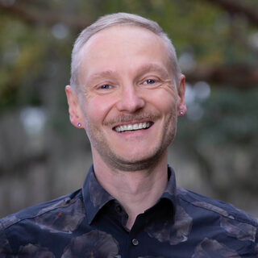

Thomas Stephan Juzek
Assistant Professor of Computational Linguistics
Department of Scientific Computing, Florida State University

Hi there, and thanks for visiting. I like to go by Tommie, and I am a computational linguist at Florida State University, based in the Department of Scientific Computing with a courtesy appointment in Modern Languages and Linguistics. My current research studies the interactions between human and AI language behaviour. I ask questions including: How do large language models such as ChatGPT use language? Why do they use the language they do? How does that compare to human language use?
We are seeing some remarkable shifts in human language use whose timing and pattern give AI a plausible role; establishing what actually drives them is part of my current work. More broadly, language behaviour is an excellent testbed for model behaviour, and language alignment is part of the wider effort to align models with human expectations.
I also teach courses in computational linguistics, and I enjoy mentoring undergraduate and graduate research on language technology and AI. I see my work as being in service of the community and the field, whether through public talks, open tools, or freely shared data. I am always happy to hear from students, and open to media enquiries.
Selected research
AI-Associated Lexical Shifts Across 34 Languages
Cross-lingual convergence: emphasize-type verbs surface in 24 of 34 languages.
@misc{juzek-2026-34languages,
title = {AI-Associated Lexical Shifts Across 34 Languages:
Cross-Lingual Convergence and Diachronic Uptake in News Writing},
author = {Juzek, Thomas Stephan},
year = {2026},
eprint = {2605.25358},
archivePrefix = {arXiv},
primaryClass = {cs.CL},
url = {https://arxiv.org/abs/2605.25358}
}Fully Automated Identification of Lexical Alignment & Preference-Stage Shifts
A reusable, curation-free diagnostic for AI lexical overuse: the foundational pipeline.
@inproceedings{juzek-etal-2026-fully,
title = {Fully Automated Identification of Lexical Alignment and
Preference-Stage Shifts in Large Language Models},
author = {Juzek, Thomas Stephan and Ming, Xiaoyang and Hernandez, Jose A.},
booktitle = {Proceedings of the Fifteenth Language Resources and
Evaluation Conference (LREC 2026)},
pages = {6116--6131},
year = {2026},
doi = {10.63317/4ut7ammh7z3h},
url = {https://lrec.elra.info/lrec2026-main-484}
}Model Misalignment & Language Change
First peer-reviewed evidence of AI-associated language traces in unscripted spoken English.
@inproceedings{anderson-etal-2025-misalignment,
title = {Model Misalignment and Language Change: Traces of
AI-Associated Language in Unscripted Spoken English},
author = {Anderson, Bryce and Galpin, R. and Juzek, Thomas Stephan},
booktitle = {Proceedings of the AAAI/ACM Conference on AI, Ethics,
and Society (AIES 2025)},
volume = {8},
number = {1},
pages = {179--191},
year = {2025},
doi = {10.1609/aies.v8i1.36540},
url = {https://doi.org/10.1609/aies.v8i1.36540}
}AI Word Explorer
Browse AI-overused words by language, register, and model, now including GPT-5.2.
aiwordexplorer.comFor more papers, see the research page or Google Scholar.
In the news
- The New York Times
- The Guardian
- The Economist
- The Washington Post (AI & language)
- The Washington Post (Romance vs Germanic)
- Newsweek
- The Telegraph
- Forbes
- Fast Company
- ZDNet
- TechRadar
- Daily Mail
- El País
- WIRED
- Science Friday
- Reuters Institute
… and many more. See all coverage →